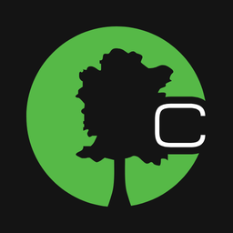
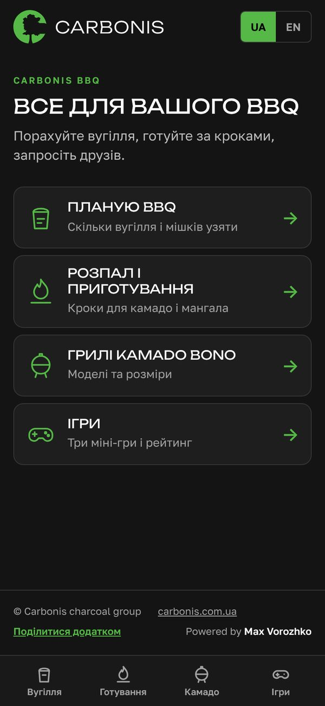
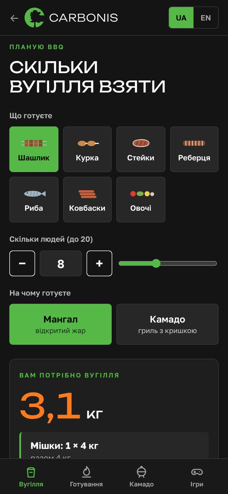
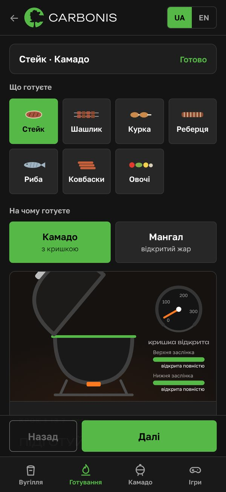
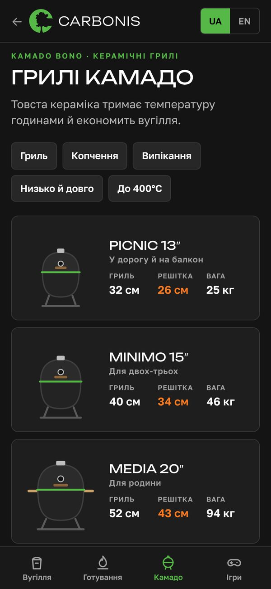
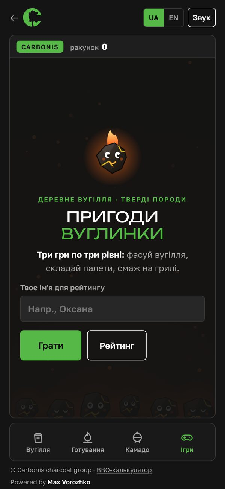

Застосунок бренду деревного вугілля: калькулятор, покроковий гід приготування, каталог грилів і гра. Українською й англійською, ставиться на телефон і працює без інтернету.





Обираєте страву, кількість гостей і мангал чи гриль, а калькулятор рахує вугілля в кілограмах і мішках Carbonis. Розрахунком можна поділитися, а кнопка «Де купити» веде до покупки.
Інструкції для камадо й мангала з анімованою схемою гриля, положенням заслінок і таймерами.
Моделі й характеристики грилів поруч із вугіллям, яке для них підходить.
Вуглинка проходить шлях продукту: стрибає в мішок на лінії фасування, складає палети у фуру за реальною схемою й розпалює гриль. Зірки за точність і онлайн-рейтинг.
Напишіть коротко про нішу та задачу. Запропоную формат і наступні кроки.